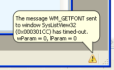

Any errors, warnings or general information will be logged to the logs pane in Window Detective's main window. Note that this does not include window message logs.
Enable Balloon Notifications
When an error or important event occurs, a balloon pops up to notify
you (in addition to logging it).
This option allows you to turn off the popup.

Logging to File
If enabled, all logs will be written to a file. Select a folder to output to and a log file will be generated named "Window_Detective_<current date>.log", where <current date> is the date in ISO format (YYYY-MM-DD).